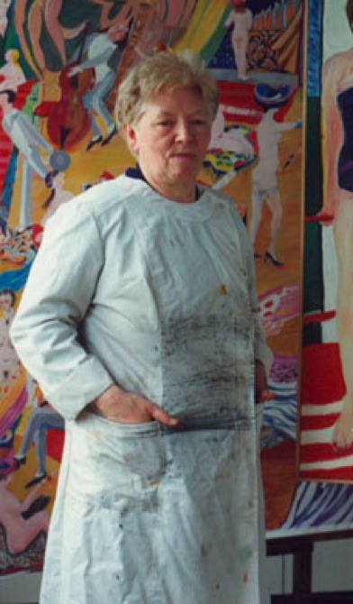
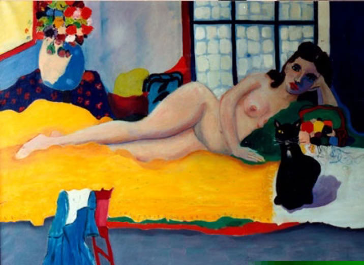

Helen Godderidge
Attirée très tôt par la peinture, elle intégra l’Académie d’Anderlecht à Bruxelles, où elle se forgea rapidement une solide réputation de talent. Elle y reçut le prix Talens, distinction dont elle était particulièrement fière. Par la suite, elle poursuivit son œuvre dans son atelier, fidèle à sa passion. Ses chats et ses chiens furent ses compagnons les plus constants.
Ses toiles racontent des histoires, comme des voyages vers d’autres mondes, riches en couleurs et en contrastes. Chaque œuvre semble ouvrir une fenêtre sur un univers intime, peuplé d’émotions, de souvenirs et de rêves silencieux. À travers des teintes éclatantes et des compositions parfois mystérieuses, elle cherchait moins à reproduire la réalité qu’à transmettre une sensation, une atmosphère, une émotion fugitive.
La lumière occupait une place essentielle dans son travail. Elle aimait jouer avec les nuances, les matières et les oppositions de couleurs afin de donner vie à ses personnages, à ses paysages imaginaires ou à ses scènes inspirées du quotidien. Certaines de ses peintures dégagent une douceur mélancolique, tandis que d’autres explosent d’énergie et de liberté, comme si chaque toile possédait sa propre voix.
Peindre n’était pas seulement une passion, mais une manière d’exister et de communiquer avec le monde. Dans le silence de son atelier, entourée de ses animaux, elle créait avec sincérité, laissant parler son instinct plus que les règles académiques. Son univers artistique, profondément personnel, invite le regardeur à s’attarder, à imaginer, et à entrer à son tour dans ce voyage coloré où chaque détail raconte une histoire. 🎨

